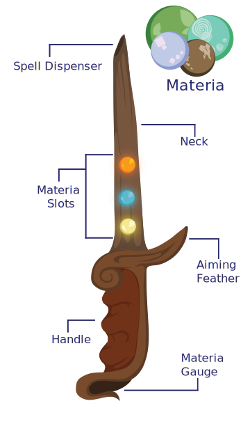

How to be a Magician
Step 2: Know Your Tools
Covering the basic elements and flow of mana, you must now learn how to channel your spells through a material objects. Mana is like water in a sense, it can rush out all at once with great force or it can leak out in small drops at a slow pace. Everyone's mana flow has different paces and everyone's mana pool, amount of mana a person can have at a time, vary in sizes. Thats where the Material Channel comes in. Material Channels are used to direct, control, and aim the disposal of mana. Material Channels like pipes for the mana pool to flow through and they can be any object. A pendant, a bell, a bracelet, a glove, but for Novice Magicians you will have to start of with the basic and easiest tool to master, a wand.
Wands are the classic magician tool for they have been the first magician tool. Wands can take many forms however to accomadate the magician. A wand could be like a simple pen, a mighty staff, or even a scepter. Shape nor size does not affect one's magic, so copying wand designs is not very useful. Though a Magician can craft their own as they see fit, at most magic academies the Novice students are a Novice wand so they can least learn how to use a Material channel. The Diagram speaks for itself. The Handles are usually leather but can be easily improvised that can magician can do it themselves. The aimimg feather is for the magician to learn how to aim certain spells better as they learn what kind of path certain spells or elements have. The feather can be easily detached if the magician wants to practice without one. And the spell dispenser is where the the spells emit from. However, there is an optional attribute that all Novice wands have that many magicians, even Veteran Magicians, still use today and that is Materia.
Spell orbs: Materia
Materia is an improvised man-made material that's only been present in Arcadia for 20 years. Magicians, preferably alchemists, have learned how to encase elements and spells into pebbles, making them into magical jewels or better suited name: "Spell Orbs", to help Magicians in their handicaps.
Magicians that may be skilled in one element could be very much lacking in another, or won't be able to learn a certain spell at all, so Materia can be ordered and purchased. The magician can insert the Materia bead into the wand, via the Materia Gauge, load it into the wand use the Materia as a sort of ammo to cast a spell through the wand. Materia doesn't only have to be used for magicians that are lacking in certain spells and elements. Materia can also be used for Magicians as emergency rations. As stated before, Magicians of all kinds have varying mana pools, some significantly large that they can cast spell ontop of spell for hours while some others can only cast a spell every few minutes. If a Magician is in any sort of emergency or tight spot they can use Materia to cast a spell without using any of their own mana.
Some Magicians can also make a profit as Materia as the less gifted ones in Arcadia that aren't able to use spells can purchase Materia from magicians to use for conveniences. Such as a fire Materia can be used to light the fire place. An ice Materia can be used to freeze a piece of meat to keep it fresh. A water Materia can be used to water the plants or run a bath. Fungi Materia are purchased more frequently than any other Materia for they can be used to quicken the growth of crops and bare healthier fruits and vegetables. So if you are running low on money, as long as you know basic earth spells and any other spell, you can make a modest living.